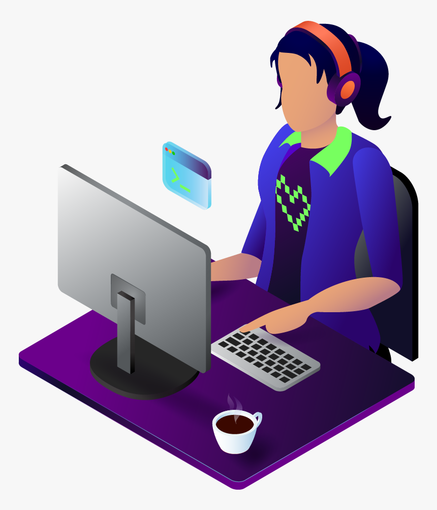

Hey, My name is Supriya
and I am a passionate
Web Developer

About Me
Welcome to my portfolio! I am a passionate web developer with a keen interest in creating beautiful and functional websites. I am persuing BTech from Biotechnology.
Skills
HTML5, CSS3, JavaScript, Python
Experience
Two months training on Molecular ,microbiological and immunological techniques employed in clinical samples of leprosy patients.